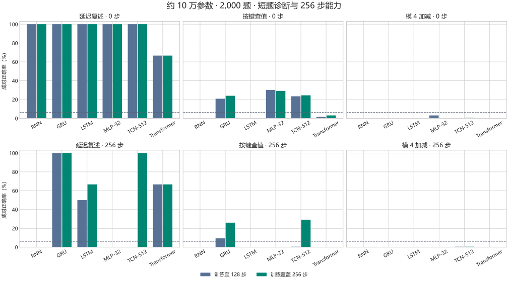

标准模型长程记忆公平对照
各模型、任务、参数档和训练长度条件都使用相同的学习率候选 0.001、0.003、0.01。只用独立验证题选学习率，再用三个种子重新训练。每批 16 题，记录同一条训练轨迹在 480 和 2,000 题时的成绩。
256 步成绩一览
比较训练中见过 256 步和只见过至 128 步。每格上方为单题准确率，下方为同一题修改早期线索前后都答对的比例。
各长度成绩对比
每格给出三种子均值与最低至最高值。0 步检查任务规则，因输入空间有限，可与训练题重复。其余长度的测试题及配对与训练分离。均匀四类猜测的单题期望为 25%，独立配对期望为 6.25%。
短题诊断与长题能力
下图用较大的参数档展示成对正确率。虚线是独立四类猜测的 6.25%。
